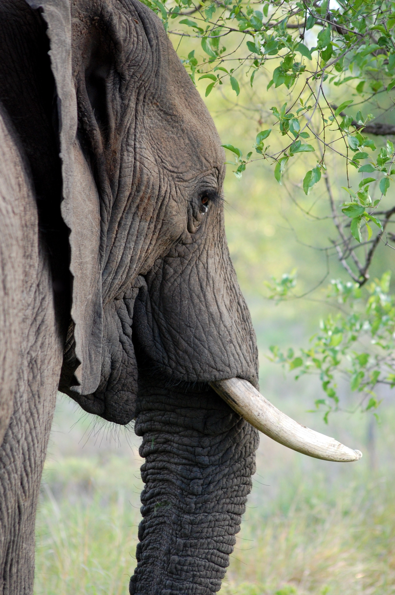

FACTS
Sumatran elephants feed on a variety of plants and deposit seeds wherever they go, contributing to a healthy forest ecosystem. They also share their lush forest habitat with several other endangered species, such as the Sumatran rhino,
tiger, and orangutan, and countless other species that all benefit from an elephant population that thrives in a healthy habitat.
- Status
Critically Endangered
- Population
2,400-2,800
- Scientific Name
Elephas maximus sumatranus
- Height
5-9 feet at the shoulder
- Weight
approximately 5 tons
- Length
up to 20 feet
- Habitats
Broadleaf moist tropical forests

Side shot of a sumatran elephant
THREATS
Deforestation and Habitat Loss
In 2012, the Sumatran elephant was changed from “Endangered” to “Critically Endangered” because half of its population has been lost in one generation—a decline that is largely due to habitat loss and as a result human-elephant conflict.
Sumatra has experienced one of the highest rates of deforestation within the Asian elephant’s range, which has resulted in local extinctions of elephants in many areas. Over two-thirds of its natural lowland forest has been razed in
the past 25 years and nearly 70 percent of the Sumatran elephant’s habitat has been destroyed in one generation.
WHAT WWF IS DOING
REDUCING HUMAN-ELEPHANT CONFLICT
The region around Tesso Nilo in central Sumatra is being cleared so rapidly that elephants often go to farms and commercial plantations in search of food. In 2004, WWF started an Elephant Flying Squad, which is made up of rangers, noise
and light-making devices, a truck, and four trained elephants that would drive wild elephants back into the forests if they threatened to enter villages.